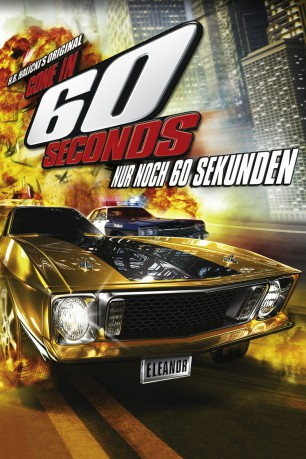

#4126 Die Blechpiraten
Alternativ: Gone in 60 Seconds
 
 IMDB-Wertung: 6.5 / 10
IMDB-Wertung: 6.5 / 10  Metascore: 0
Metascore: 0 
Die Blechorgie im Land der unbegrenzten Möglichkeiten beginnt damit, daß dem zukünftigen Schwiegersohn von Sheriff Gibbs der heißgeliebte Sportwagen geklaut wird. Schon geht das Spektakel los. Los Angeles wird zur Hölle. Ganze Polizeiregimenter nehmen mit Sirenengeheul die Verfolgung auf. Doch die Organisation ist clever. Die Jungs, die nie unversicherte Autos klauen, retten ihren Kumpel schließlich mit einem Helikopter aus der fahrenden Kiste. Mandrian Pace, der Boß der Autoknackerbande, erhält nun einen Großauftrag über 45 exklusive Automobile. 44 gehen glatt über die Bühne, doch das letzte wird zum Problem...
Jahr: 1974
Dauer: 98 Minuten
FSK: 16
Land: USA Studio: H.B. Halicki Mercantile Co.Tonspuren:
Untertitel: Deutsch,
Auflösung: 720p (1280x696) Größe: 4474 MB
Genre: Action, Krimi, Drama
Regisseur: H.B. Halicki
Drehbuch: Sang-hoon Ahn
Soundtrack:
Darsteller:
- Terence H. Winkless als Lyle Waggoner's Car Cleaner , uncredited
- H.B. Halicki als Maindrian Pace / Vicinski
- Marion Busia als Pumpkin Chase
- Jerry Daugirda als Eugene Chase
- James McIntyre als Stanley Chase
- George Cole als Atlee Jackson
- Ronald Halicki als Corlis Pace
- Markos Kotsikos als Uncle Joe Chase
- Butch Stockton als 1-Baker-11 detective, driver
- Phil Woods als 1-Baker-11 detective, passenger
- J.C. Agajanian Jr. als Light Blue Unmarked Detective
- Christopher J.C. Agajanian als Himself
- Gary Bettenhausen als Himself
- Edward Booker als Lowrider
- Anthony Cole als Lowrider
- Mark Cole als Lowrider
- Michael Cole als Lowrider
- Billy Englehart als Himself
- Jonathan E. Fricke als Himself / KFOX Interviewer
- Parnelli Jones als Himself
- Hal McClain als Himself / KFOX Announcer
- Don Simmons als Lowrider
- Ron Simmons als Lowrider
- Sak Yamamoto als Himself, City of Carson mayor
- Edward Abrahms als Harold Blight Smith , uncredited
- Wally Burr als Male Police Dispatcher , uncredited
- Maureen Coddington als Jill , uncredited
- Cheryl Dunn als Bikini Girl at Hungry Tiger , uncredited
- Monica Englander als Car Wash Attendant , uncredited
- Emily Fladland als Mrs. Smith , uncredited
- Frank Halicki als Sgt. Heinz , uncredited
- John Halicki als Sgt. Hawkins , uncredited
- Nancy Halicki als Lady at the Rosecrans Carwash , uncredited
- Rudy Halicki als Manager at Rosecrans Carwash , uncredited
- Edward Havens als Kid in Park , uncredited
- Philip Kachaturian als Blue Cadillac Driver , uncredited
- Mel Kenyon als Himself , uncredited
- Gary Patterson als Himself , uncredited
- Jack Popejoy als Himself / KIIS Announcer , uncredited
- Dennis Stouffer als Police Officer , uncredited
- Jack Vacek als WK90 Officer , uncredited
- Bud Wackeen als Himself , uncredited
- Bunny Walsh als Long Beach Female Dispatcher , uncredited
- Taylor Webb als Himself , uncredited
- Jeff Winkless als Firebird Car Cleaner , uncredited
Datei: X:\1974\Blechpiraten, Die (1974, FSK16, 1280x696).mkv seit 25.07.2016
Festplatte: HD 1971-1979
 Es gibt insgesamt 33 Filme in der Gruppe '1974'
Es gibt insgesamt 33 Filme in der Gruppe '1974'